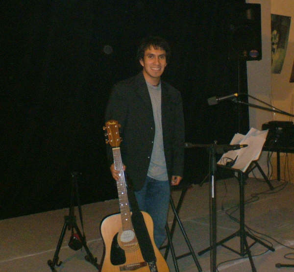

Israel De La Luz | WDD 130

Hello. My name is Israel De La Luz. I am originally from Mexico and I currently live in France.
In my free time I enjoy reading books on history, philosophy, and economics.
I also enjoy playing the guitar and listening to music.
Paris is the capital of France and one of the most beautiful cities in the world.
There are so many things to discover here: from old churches, buildings, and streets;
to its modern museums and cafés.
One of the most recognizable features of this city is undoubtedly the Eiffel Tower.
Built between January 1887 and March 1889, the tower was meant to be a temporary
structure for the World Fair held in the year of its inauguration.
However, the tower proved to be a success with both tourists and locals, while
also being of practical use in the new age of telecommunications.
Over the years, the Eiffel Tower has become a symbol of Paris, to which
millions of people flock every year and delight in its sparkling lights.